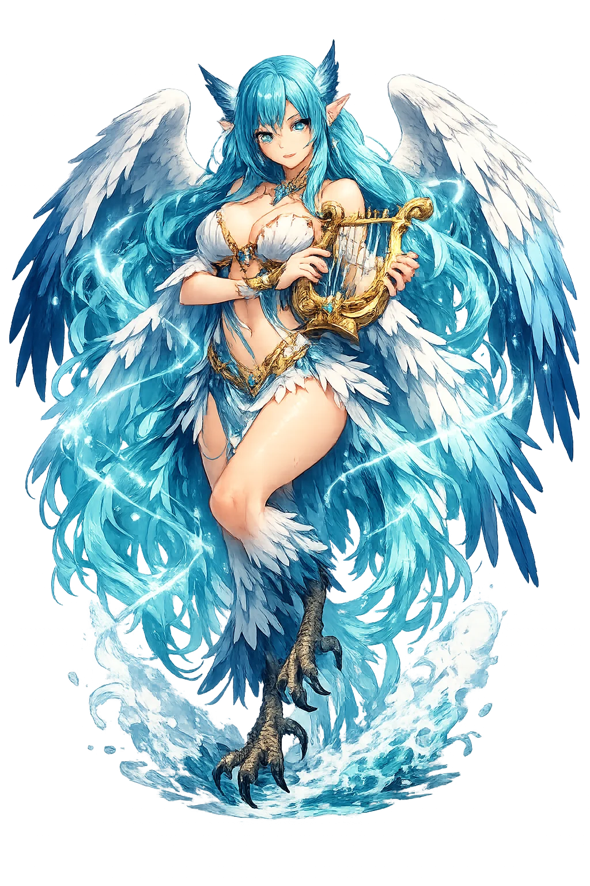

Stories of Seirḗn
Daughters of the river-god Achelōos and a Muse — Melpomenē or Terpsichorē in the later accounts — the Seirḗnes unite the authority of water and the authority of song. The sources disagree about almost everything else: their number, their wings, their end. Homer keeps them faceless and terrifying; the later tradition gives them a grief to sing about.
Kirkē warns Odysseus before he sails: the Seirḗnes “enchant all who come near,” and their island, Anthemoessa — the “flowery” — is heaped with “bones of dead men, in great heaps, and round them the flesh is rotting” (Od. 12.39–46). Her remedy is engineering: plug the crew's ears with wax, and lash the captain to the mast. Odysseus obeys, and hears what no living man was meant to survive: the Seirḗnes hail him by name — they know his story, his war, his home — and promise that whoever hears them sails away “a wiser man” (12.184–191). They do not offer pleasure; they offer knowledge of everything that shall come to pass on the fruitful earth. He strains at the ropes until they cut him; the ship passes; the danger is measured in the width of a song. The episode is the Odyssey's own warning about itself: the poem you are holding is the Sirens' promise, and every reader lashed to the bench by Homer chooses, like the crew, to row on past it.
Apollonius Rhodius sends the Argo down the same strait a generation before Odysseus, and the solution is not wax but art. As the Sirens' cry drifts over the water, “sweetly singing the homes of the blessed,” Orpheus takes up his lyre and strikes “a chord of blazing music... a song so loud that the singing of the Sirens was drowned in it” (Arg. 4.885–911). Only one man, Boutēs, leaps overboard in surrender; Aphrodite snatches him from the sea and sets him down at Cape Lilybaeum in Sicily (4.914–919). Later tradition completes the logic of the defeat — Lycophron has the Seirḗnes, shamed of their song, throw themselves into the sea (Alex. 712ff), and the scholiasts repeat it: a song that cannot bind has no reason to exist. Where Odysseus resisted enchantment with bonds, Orpheus answers it with a better song — the myth's wager that art, at its highest, is the only safe way to hear the dangerous voice.
The later tradition gives the Seirḗnes their wings as an instrument of grief. Euripides has Helen invoke the “winged maidens, servants of the daughter of Demeter” — the Seirḗnes as mourners in Persephonē's retinue (Hel. 167–178). Ovid tells the fullest version through Arethusa's mouth: the companions of Persephonē searched land and sea for the abducted girl, “and still they search; and the gods gave them feathers for the search” — wings so the search need never end, their bird-maiden form the answer to a prayer (Met. 5.551–563). Hyginus (Fab. 141) gives the same account in brief. The sources disagree on genealogy — Achelōos' daughters by a Muse in most lists, earth-born in Euripides — but on the wings' meaning they concur: the Seirḗnes sing because they are still looking for the lost girl, and the ships they stop are drowned in someone else's unfinished grief.
The fullest genealogy makes them the girlhood companions of Persephonē: they were playing with her in the flowery meadow when Hádēs burst from the earth and struck, and the maidens asked the gods for wings to search the world for her. Ovid has Arethusa tell the story as she tells everything — from inside the search: the companions ranged land and sea, “and still they search; the gods gave them feathers for the search,” wings so the looking need never end (Met. 5.551–563). In Ovid’s telling their transformation is their answer to failure — half bird, half maiden forever, still calling across the sea for the lost girl, and singing now because singing is the only form the search has left. The myth explains everything about them: the song that stops ships is a search that never ended, and the sailors it kills are drowned in someone else’s grief — one more audience who stopped to listen when they should have rowed.
Knowledge, Enchantment, and the Bone-Strewn Meadow
Seirḗn is the most intelligent monster in the Odyssey: she does not promise pleasure but knowledge — "we know everything that happens on the fruitful earth." The Greeks feared her because her offer is exactly what the wise cannot refuse.
Not seduction but information: the Sirens sing the Trojan War to the man who fought it.
Odysseus bound, crew deafened with wax — the original architecture of resisting temptation.
The Argonauts were saved not by wax but by art: Orpheus out-sang the Sirens themselves.
The Greek form — woman's head on a bird's body; the fishtail mermaid is a medieval graft.
From the original script to the living URL
Σειρήν
The name in its original Greek form. Seirḗn (Σειρήν) is attested in the source tradition — “Binder, entangler”. Its diphthongs, long vowels, and acute accents carry the full phonetic and orthographic weight of the source tradition.
seiren
Reduced to plain seiren, the name loses everything that made it specific: diphthongs, long vowels, and acute accents. What remains is an ASCII string that machines can parse but that no longer speaks with its original voice.
Seirḗn
The Unicode restoration recovers what ASCII flattened. Seirḗn restores diphthongs, long vowels, and acute accents, returning the name to its original written dignity. The domain encodes to Punycode, but the browser displays the truth.
Seirḗn.com → xn--seirn-yd1b.com
The non-ASCII characters in Seirḗn are encoded while the ASCII remains visible. To the DNS, it is Punycode. To humanity, it is Seirḗn.
Owned, ideal, and ASCII forms of Seirḗn
Seirḗn
Restores Σειρήν. The live temple domain — seirḗn.com.
seiren
Flattens Σειρήν. The plain ASCII fallback — what DNS and legacy systems see.
How Seirḗn was spoken
How Seirḗn is preserved in writing
A bespoke provenance study for Seirḗn is being prepared by the PUNICODEX scholarly team.
Contribute scholarly provenance →Seirḗn is the patroness of dangerous knowledge — the truth that costs the listener his course. The Greeks' answer was not ignorance but engineering: hear the song, keep the ropes. Her question remains the sharpest in the Odyssey: if a voice offered to tell you everything, could you sail past it?
Enter Extended Lore